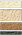

ポイントメイク
デザインコンセプト
Design Concept

AQ MW。それは、愛らしく無垢で、天使のような存在。どこかで蝶が、燃えるようなまばゆい色を放ちながら、何かを探して自由に飛び舞っている間、AQ MWはゆったりと“その時”を待っている・・・。蝶は、世界中にあるさまざまな“色”と、季節ごとの“不思議”を探し集め、それらを目もくらむような色彩に変えていく。明けても暮れても飛びつづけ、ようやく天使のように愛らしく、無垢なAQ MWを見つけ、その上に舞い降りて羽を休める。その様子は、とびきり甘く優しいキスのよう。
AQ MWは蝶からのキスによって、あらゆる色と模様の輝きで満たされ、威風堂々と輝き、華やかに飾られた。そう“その時”が来たのだ。強烈な色たちが複雑に入り組んだ蝶の美しさは、AQ MWの中で永遠(とわ)に生きつづけ、女性に絶対的な美しさをあたえる。蝶のキスは、女性のキスになる。
マルセル・ワンダース

アートディレクター
マルセル・ワンダース
メイクアップパターン
2016.11.1
Makeup Coffret V
Makeup Recipe
2016 Autumn Makeup
-Spicy Black-
-
 Cool Patternクール パターン
Cool Patternクール パターン -
 Mild Patternマイルド パターン
Mild Patternマイルド パターン -
 Feminine Patternフェミニン パターン
Feminine Patternフェミニン パターン
Cool Pattern
クール パターン
目尻部分に広めにぼかしたアーバンブラックとローズグレーのグラデーションでつくる深みのある目もとに、艶やかな漆黒のブラックラインを太く長く効かせたクールなまなざし。
気品漂う、まろやかなスモーキーブラウンの唇とあわせて、女性らしさの中にもクールな輝きを放つエレガントな女性を表現します。

① 『グラデーション アイシャドウ』
黒のシェーディングカラーとグレーのアクセントカラーを目尻が太くなるように、やや太めに入れてぼかします。
② 『スタイリング リキッドアイライナー』
全体的に太めに描きます。目尻部分も太く長く描くことで、クールな目もとを強調します。
Makeup Data
EYES:
- AQ MW グラデーション アイシャドウ 063 新色
- or
AQ MW アイグロウ ジェム GY081 - AQ MW スタイリング リキッドアイライナー BK001 新商品
- （AQ MW ラスティング ジェル アイライナー RD401）
- AQ MW ペンシル アイブロウ BR301

LIPS:
- AQ MW ルージュ グロウ BR353 新色
- or
AQ MW アール デ フルール RO612 新色
FACE:
- AQ MW シークレット グロウ SP001
- AQ MW ブレンド ブラッシュ PK802
- AQ MW フェイスパウダー 11
NAILS:
- AQ MW ネイルエナメル SP046 新色
CLOSE
Mild Pattern
マイルド パターン
ゴールドパールが繊細なきらめきを放つゴールドブラウン×ベージュのまぶたに、オリーブブラックのスパイスを効かせた、知的さの中に女性らしさが漂う目もと。
ほんのりと甘さが漂う艶やかなミルキーオレンジの唇が、穏やかな大人の優しさを感じさせるエレガントな女性を表現します。

① 『グラデーション アイシャドウ』
シェーディングカラーを下まぶた目尻1/3まで入れて目もとを引き締め、奥行きを出します。
② 『スタイリング リキッドアイライナー』
やや太めに、目尻はスッと抜けるように短めに描き、柔らかな表情を引き立てます。
Makeup Data
EYES:
- AQ MW グラデーション アイシャドウ 064 新色
- or
AQ MW アイグロウ ジェム GD080 - AQ MW スタイリング リキッドアイライナー BK001 新商品

- （AQ MW ラスティング ジェル アイライナー BK001）
- AQ MW エレガント マスカラ BK001

- AQ MW ペンシル アイブロウ BR302
LIPS:
- AQ MW ルージュ グロウ OR252 新色
- or
AQ MW アール デ フルール BE310 新色
FACE:
- AQ MW シークレット グロウ BE301
- AQ MW ブレンド ブラッシュ RD400
- AQ MW フェイスパウダー 10
NAILS:
- AQ MW ネイルエナメル GD047 新色

CLOSE
Feminine Pattern
フェミニン パターン
優雅に華やぐアメジストブラックを引き立てるピンクベージュのまぶたに、目尻が下がったようにみえるライン使いでかなえる、甘さを感じさせる目もと。
ピュアで女性らしいクリアピンクの唇とのバランスが、強さと甘さが共存するフェミニンでエレガントな女性を表現します。

① 『グラデーション アイシャドウ』
黒目の上が太くなるようにグラデーションをつくり、下まぶたの際にハイライトカラーをのせて涙袋を強調します。
② 『スタイリング リキッドアイライナー』
目尻が少し下がるように描き、甘さのある表情を引き立てます。
Makeup Data
EYES:
- AQ MW グラデーション アイシャドウ 065 新色
- or
AQ MW アイグロウ ジェム PK880 - AQ MW スタイリング リキッドアイライナー BK001 新商品

- （AQ MW ラスティング ジェル アイライナー BR301）
- AQ MW エレガント マスカラ BR301
- AQ MW ペンシル アイブロウ BR301
LIPS:
- AQ MW ルージュ グロウ PK858 新色
- or
AQ MW アール デ フルール BE310 新色
FACE:
- AQ MW シークレット グロウ SP001

- AQ MW ブレンド ブラッシュ PK801
- AQ MW フェイスパウダー 80
NAILS:
- AQ MW ネイルエナメル RO641 新色
CLOSE
アイライン・テクニック
-
Cool Pattern
クールパターン
クールライン（強め・太め）
<正面をみた状態>
-

①正面をみた状態で、下まぶたのラインの延長線上に、目尻のガイドラインを描く。
-

②やや水平気味に中央に向かいながら描き、間を塗りつぶす。
-

③目頭から中央をつなぐ。
-
-
Mild Pattern
マイルドパターン
基本テクニック
<目を閉じるorやや伏し目の状態>
-

①中央から目尻に向かって描く。
-

②目頭から中央をつなぐ。
-
-
Feminine Pattern
フェミニンパターン
フェミニンライン（下がり目）
<正面をみた状態>
-

①正面をみた状態で、上まぶたのラインの延長線上に、やや下げ気味に描く。最後は横にスッと抜けるように描く。
-

②中央から目尻をつなぐ。
-

③目頭から中央をつなぐ。
-
CLOSE
2016.11.1
Makeup Coffret V
Makeup Recipe

落ち着きと温もりに包まれたブラウンのグラデーションに、繊細なパールがきらめく上品な目もと。女性らしさが漂う艶やかなレッドの口もとと、ふんわりと華やぐレッドチークをアクセントにして大人の色気をプラス。
指先には、宝石のように繊細なシルバーのきらめきを添えて。誰よりも幸せなオーラを放ち、大人の色気を感じさせる艶やかでシックな女性を表現します。

＜落ち着きと温もりに包まれた、やさしげな目もとへ＞
①～④の順にグラデーションを丁寧に仕上げます。
①のシェーディングカラーは、上まぶたの際と目尻側の下まぶた１／３にのせ、
丁寧にぼかしこむことで、深みのある女性らしい、やさしげな目もとに。
Makeup Data
［限定色］ AQ MW メイクアップ コフレ Ⅴより
EYES:
- AQ MW グラデーション アイシャドウ 102 限定
- AQ MW ラスティング ジェル アイライナー BR301
- AQ MW エレガント マスカラ BK001
- AQ MW ペンシル アイブロウ BR301
LIPS:
- AQ MW ルージュ バーム RD401 限定
FACE:
- AQ MW ルースパウダー ブラッシュ A 限定
- AQ MW シークレット グロウ SP001

- AQ MW フェイスパウダー 80
NAILS:
- AQ MW ネイルエナメル SV048 限定
CLOSE